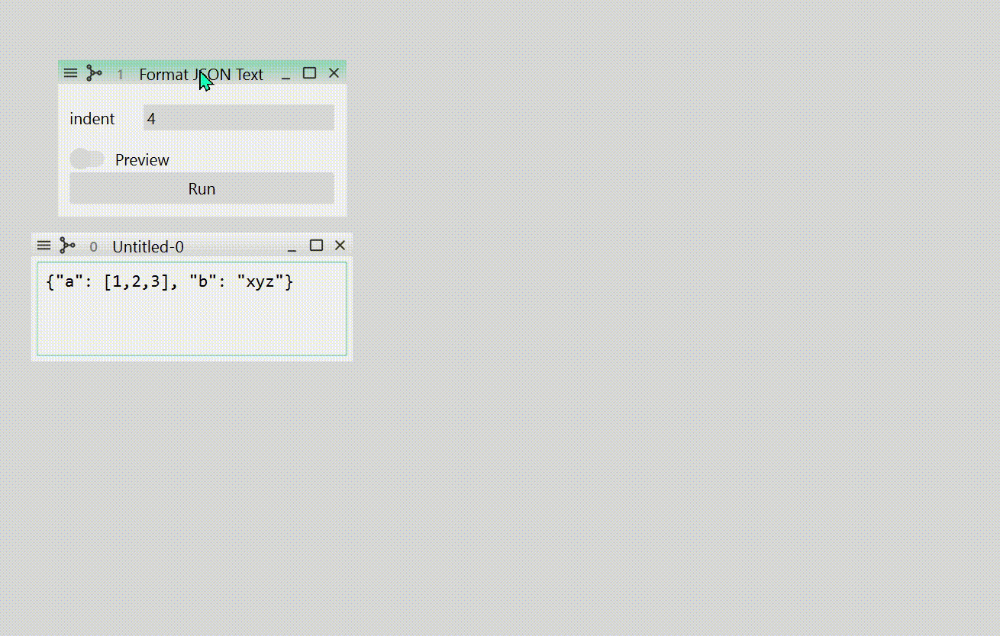

Register Functions
To process and analyze data, you need functions that convert an object into another. This section tells you how to register such functions so that you can run them on the GUI.
Function Definition
Basically, a function that processes data is a function that takes a WidgetDataModel
object and returns another WidgetDataModel object. For example, the following function
formats a non-indented json text data into an indented, pretty json text data.
from himena import WidgetDataModel
def format_json(model: WidgetDataModel) -> WidgetDataModel:
value = json.dumps(json.loads(model.value), indent=4)
return WidgetDataModel(value=value, type="text")
Because himena has its default widget for "text"-type model, this function can be
readly used in the GUI. You can register this function using register_function()
function.
from himena import WidgetDataModel
from himena.plugins import register_function
import json
@register_function(title="Format JSON Text")
def format_json(model: WidgetDataModel) -> WidgetDataModel:
value = json.dumps(json.loads(model.value), indent=4)
return WidgetDataModel(value=value, type="text")
The registered function will be shown in the menu bar (under the "Plugins" menu by
default) and the command palette. When this function is called from the GUI, currently
active window will be converted into a WidgetDataModel object and passed to the
function. The returned WidgetDataModel object will then be converted into another
window.
Dependency Injection and Type Narrowing
himena uses in_n_out library to inject
the application context into functions. For example, in the previous example, the
WidgetDataModel of the current window is injected to the model argument of the
format_json function. If no window is activated, the "Format JSON Text" menu is grayed
out.
Here are the list of type hints that will be provided to the argument of the registered functions.
WidgetDataModel: The current window's data.TabArea: The current tab area.SubWindow: The current sub-window.MainWindow: The main window.ClipboardDataModel: The clipboard data.
And here are the list of return types that will be processed.
WidgetDataModel: The returned value will be added to the current tab.list[WidgetDataModel]: Each item will be added to the current tab.Parametric: The returned function will be converted into a GUI for user input of parameters (see here).ClipboardDataModel: The returned data will overwrite the system clipboard.WidgetConstructor: The returned function will be executed to add a new sub-window with the constructed widget.concurrent.Future: The returned job will be executed asynchronously.
A problem of the example above is that the model argument may contain any type of
data (not only "text"-type data). To narrow the type of data, you can use the types
argument of the register_function() decorator.
from himena.consts import StandardType
@register_function(
title="Format JSON Text",
types=[StandardType.TEXT],
)
def format_json(model: WidgetDataModel) -> WidgetDataModel:
...
With this, the "Format JSON Text" menu will be enabled only if the current window is a
widget for "text"-type data. Another benefit is that this command will be added to the
model menu of the "text"-type widget.
Place the Function in Any Places in Menu Bar
The place to put the function in the menu bar can be specified by the menus argument
of the register_function() decorator. Each menu is specified by a "/"-separated string
identifier. Following is an example that puts the function in the
"my-plugins > my-text-plugins" menu.
from himena import WidgetDataModel, StandardType
from himena.plugins import register_function
@register_function(
title="Format JSON Text",
types=[StandardType.TEXT],
menus=["my-plugins/my-text-plugins"],
)
def format_json(model: WidgetDataModel) -> WidgetDataModel:
...
To define how to display the menu title, you can use configure_submenu().
from himena.plugins import configure_submenu
configure_submenu("my-plugins", title="My Plugins")
configure_submenu("my-plugins/my-text-plugins", title="My Text Plugins")
If a menu has many items, it is better to group them. You can use the group argument
of configure_submenu() for this purpose. Groups are sorted alphabetically, so it is
a good idea to prefix the group name with a number to control the order.
configure_submenu(
"my-plugins/my-text-plugins",
title="My Text Plugins",
group="00_process-text",
)
Parametric Functions
Many functions require user parameter inputs. It is very easy to implement a parametric function in Python: just add more arguments to the function. However, implementing parametric functions in GUI is usually tedious, as you need to create a specific widget for every function.
himena uses magicgui package to convert a
function with parameters into a GUI widget based on the type hints of the function.
Therefore, you can easily register a parametric function just by returning a function
that takes parameters.
To tell himena that the returned value should be converted into a GUI for user input
of parameters, you need to annotate the returned value with the Parametric type.
from himena.plugins import register_function
from himena import Parametric, StandardType, WidgetDataModel
@register_function(
title="Format JSON Text",
types=[StandardType.TEXT],
)
def format_json(model: WidgetDataModel) -> Parametric:
def run_format_json(indent: int = 4):
value = json.dumps(json.loads(model.value), indent=indent)
return WidgetDataModel(value=value, type="text")
return run_format_json
The type-to-widget mapping is as follows:
int,float,str,list[int],list[float]→ Line edit with the corresponding type.bool→ Toggle switch.enum.Enum,typing.Literal→ Combo box with the choices.pathlib.Path→ Entry with a file dialog button.tuple→ Group box with the corresponding types.WidgetDataModel,list[WidgetDataModel],SubWindow,list[SubWindow]→ Drop area that can drop other sub-windows to provide the corresponding data.
Serialization
The input parameters should be serializable for workflow
recording. Although magicgui can support various type-to-widget mapping, the input
values are restricted to those that can be serialized by himena. For example,
slice and range objects are not supported as input types in himena.
Configure Parameter Input Window
The parameter input window is automatically generated by magicgui. You can further
customize its appearance and GUI properties by configure_gui()
decorator.
from himena.plugins import register_function, configure_gui
from himena import Parametric, StandardType, WidgetDataModel
@register_function(
title="Format JSON Text",
types=[StandardType.TEXT],
)
def format_json(model: WidgetDataModel) -> Parametric:
@configure_gui(indent={"label": "Indent in Spaces", "min": 0, "max": 8})
def run_format_json(indent: int = 4):
value = json.dumps(json.loads(model.value), indent=indent)
return WidgetDataModel(value=value, type="text")
return run_format_json
configure_gui takes keyword arguments that are passed to the function it decorates,
and use dict to configure the widget used for the parameter input.
Here's some of the options you can use.
label: The label of the input field.value: The default value.choices: List of choices.widget_type: Widget class to use. This option must be amagicguiValueWidget.min: The minimum value (if applicable).max: The maximum value (if applicable).
Note
To avoid argument name collision, you can pass the options as a dict to
gui_options.
@configure_gui(
gui_options={"indent": {"label": "Indent in Spaces", "min": 0, "max": 8}},
)
def run_format_json(indent: int = 4):
...
Bind Values to Parameter Input
Some parameters are better to be retrieved from the input sub-window. For example, if a function counts the number of "a"s in a subset of a text, the user may want to select the text in the sub-window and pass the selected range to the function instead of requesting a range (int, int) using a parameter input.
The "bind" option of magicgui is very useful for this purpose. The value passed to the
"bind" option will be directly used as the value for the parameter. Because the selected
range is available in the TextMeta metadata
as the selection property, you can define a function as follows.
from himena.plugins import register_function, configure_gui
from himena import Parametric, StandardType, WidgetDataModel
@register_function(
title="Count 'a'",
types=[StandardType.TEXT],
)
def count_a(model: WidgetDataModel) -> Parametric:
@configure_gui(text_range={"bind": model.metadata.selection})
def run_count_a(text_range: tuple[int, int]):
start, end = text_range
print(model.value[start:end].count("a"))
return run_count_a
This function does not have any parameter that can be specified by the user, thus no parameter input widget will be shown. The function will be immediately called when the command menu is clicked.
If the function has other parameters that do not have bound values, the parameter input widget will be shown as usual.
from himena.plugins import register_function, configure_gui
from himena import Parametric, StandardType, WidgetDataModel
@register_function(
title="Count 'a'",
types=[StandardType.TEXT],
)
def count_a_2(model: WidgetDataModel) -> Parametric:
@configure_gui(text_range={"bind": model.metadata.selection})
def run_count_a(text_range: tuple[int, int], case_sensitive: bool = False):
start, end = text_range
if not case_sensitive:
text = model.value[start:end].lower()
else:
text = model.value[start:end]
print(text.count("a"))
return run_count_a
Why do we ever need to bind values?
You may ask why don't we just directly use model.metadata.selection inside
the registered function, instead of returning a function to make the command
parametric.
@register_function(
title="Count 'a'",
types=[StandardType.TEXT],
)
def count_a(model: WidgetDataModel):
start, end = model.metadata.selection
print(model.value[start:end].count("a"))
A benefit of using a parametric function is that the function becomes reproducible. When the function is re-executed from a workflow, the input text edit does not necessarily in the same state as when the function was executed. In the example above, the text selection range is not likely to be the same, so that you will get a different result.
In general, all the information in the metadata property should not be directly
used in commands; they should always be passed as "bind" options.
Preview Function Outputs
In some cases, parameters should be tuned based on the output of the function. For
example in the case of the format_json function, the user may want to see the output
so that the json string looks good. To add a "preview" toggle button to the parameter
input window, just add the preview argument to the configure_gui() decorator.
@register_function(
title="Format JSON Text",
types=[StandardType.TEXT],
)
def format_json(model: WidgetDataModel) -> Parametric:
@configure_gui(preview=True)
def run_format_json(indent: int = 4):
value = json.dumps(json.loads(model.value), indent=indent)
return WidgetDataModel(value=value, type="text")
return run_format_json

Asynchronous Execution
It is also very easy to make your function asynchronous (make the application responsive
during the execution). Just add the run_async=True argument to the
register_function() decorator.
@register_function(
title="Format JSON Text",
types=[StandardType.TEXT],
run_async=True,
)
def format_json(model: WidgetDataModel) -> Parametric:
def run_format_json(indent: int = 4):
value = json.dumps(json.loads(model.value), indent=indent)
return WidgetDataModel(value=value, type="text")
return run_format_json
Do not update the GUI from an asynchronous function
You should not update the GUI from an asynchronous function, because it can only be updated in the main thread.
@register_function(
title="Add widget",
run_async=True,
)
def add_widget(ui: MainWindow):
ui.add_widget(QtW.QLabel("Hello, world!"))
Functions That Only Works in A Specific Widget
If you know that the function only works in a specific widget T, you can use the
annotation SubWindow[T]. This command will only be enabled when the current sub-window
is built with the widget T.
For example, the following built-in plugin function only works for the QImageView
widget.
@register_function(
title="Scale bar ...",
...,
)
def setup_image_scale_bar(win: SubWindow[QImageView]) -> Parametric:
...